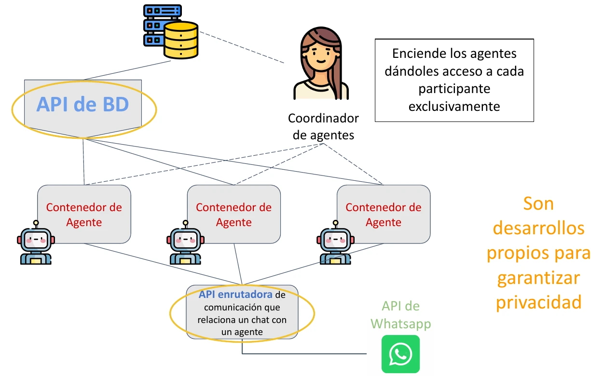
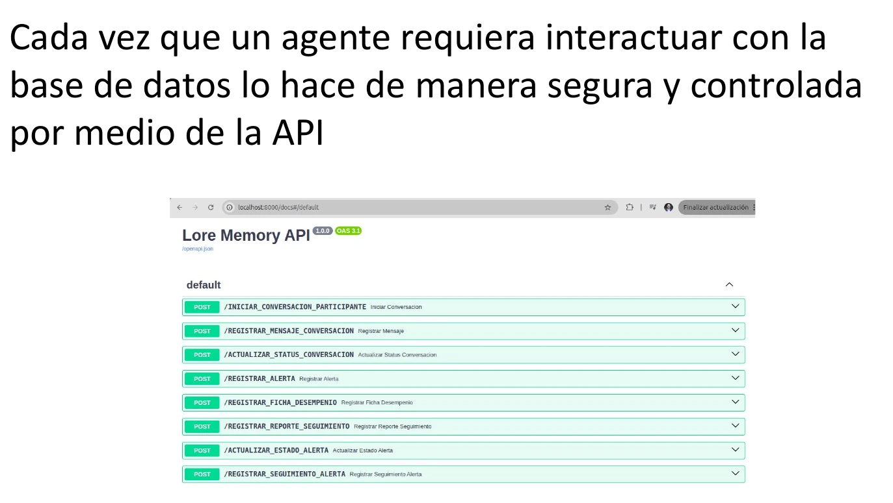
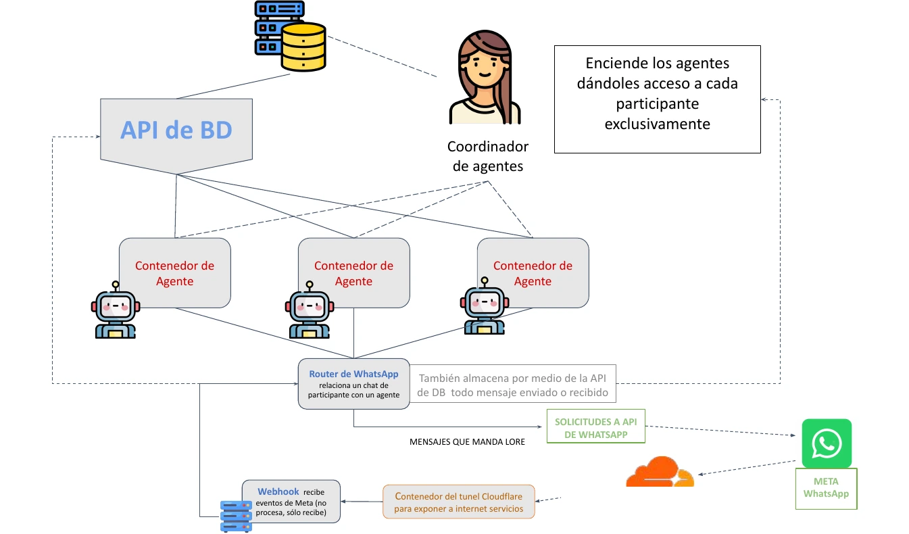

Aislamiento por participante
Cada agente dispone de contexto y memoria independientes y solo recibe acceso a la información del participante que tiene asignado.
Diseño de arquitecturaPortafolio técnico
Alfredo Eleazar Orozco Quesada
Diseño y construyo sistemas inteligentes que conectan agentes, APIs, bases de datos y servicios cloud. Combino fundamentos de desarrollo, arquitectura de datos y diseño centrado en las personas para convertir problemas reales en soluciones tecnológicas implementables.
No me limito a conectar un modelo de lenguaje: diseño el sistema que lo hace útil, interoperable y gobernable.
01Perfil y enfoque
Mi trabajo se sitúa en la intersección entre desarrollo de software, datos e inteligencia artificial aplicada. Me interesa construir soluciones completas: entender el problema y el flujo de trabajo, modelar la información, diseñar las interfaces y APIs, integrar modelos y herramientas, y pensar desde el inicio en seguridad, despliegue y operación.
Mi experiencia combina desarrollo full-stack, aplicaciones móviles, sistemas de datos, soluciones cloud y diseño de experiencias. En proyectos recientes he llevado ese enfoque al diseño de arquitecturas de agentes conectadas con WhatsApp, APIs y bases de datos relacionales.
02Proyecto destacado
Lore · Consultoría
Diseño e implementación de una arquitectura de agentes conectada a WhatsApp, con agentes y memoria por participante, una API de herramientas desarrollada en Python y una base de datos relacional que media el acceso a la información. La arquitectura busca personalización a escala sin que un agente pueda consultar información de otra persona.
El problema
El acompañamiento pedagógico y el seguimiento individual consumen tiempo del equipo humano. Aumentar el número de participantes puede reducir la atención personalizada. Se buscó diseñar un sistema capaz de conducir interacciones, apoyar sesiones asincrónicas, registrar resultados y facilitar alertas para que los gestores humanos puedan intervenir cuando sea necesario.
Qué hace el sistema
Estas son capacidades del caso de uso y del sistema diseñado. No se afirma que todas estén desplegadas en producción ni que el sistema reemplace decisiones humanas. Las alertas son insumos para revisión de personas responsables.
Arquitectura técnica
El flujo conecta el canal de mensajería con un webhook publicado de forma segura, un router propio en Python, agentes aislados por participante y una API que media el acceso a la base de datos.
Desliza horizontalmente para ver el diagrama completo.
Decisiones de arquitectura y seguridad
Cada agente dispone de contexto y memoria independientes y solo recibe acceso a la información del participante que tiene asignado.
Diseño de arquitecturaLos agentes no consultan directamente la base de datos. La API desarrollada en Python se expone como tool y aplica la restricción de acceso por participante.
Componente desarrolladoUna API y router propios relacionan cada chat con su agente correspondiente. El agente no necesita conocer ni consultar los demás chats.
Componente desarrolladoWhatsApp se integra mediante webhook; la orquestación y las reglas de interacción residen en la capa de aplicación; los datos se consultan por una interfaz controlada.
Diseño de arquitecturaCloudflare Tunnel utiliza una conexión iniciada desde el contenedor hacia Cloudflare. No se requiere exponer directamente puertos entrantes del servidor en la arquitectura presentada.
Diseño de arquitecturaLa comunicación de Meta a Cloudflare se realiza mediante HTTPS, de acuerdo con el diseño documentado. Los mensajes enviados y recibidos se registran mediante la API de datos.
Diseño de arquitecturaEl diseño contempla validar que el participante esté activo y cuente con los consentimientos requeridos antes de habilitar interacciones del agente.
ConsideradoLas señales académicas, comportamentales o sociales facilitan el seguimiento del equipo humano; no se presentan como decisiones automatizadas de alto impacto.
Principio de diseñoSe identificó el riesgo de interacciones ilimitadas fuera de las sesiones. Se contempló contar interacciones y aplicar límites operativos para controlar consumo y costos.
ConsideradoTecnologías del proyecto
Evaluación tecnológica: Se evaluaron OpenClaw y n8n como alternativas de orquestación. La solución final se desarrolló mediante un flujo propio en Python, junto con las APIs necesarias para el enrutamiento y el acceso controlado a datos.
Evidencia visual
Algunos diagramas de arquitectura trabajados durante la formulación del proyecto en relación con el diagrama anterior.

Arquitectura de agentes
Diagrama de Lore con agentes en contenedores separados, API de datos, coordinador y router de WhatsApp.

API de herramientas
Documentación OpenAPI/Swagger de Lore Memory API y sus operaciones para registrar conversaciones, mensajes, estados, alertas y reportes.

Integración y despliegue
Diagrama de integración entre WhatsApp/Meta, webhook, contenedor de Cloudflare Tunnel, sistema de gestión y API. El hostname específico fue ocultado.
La captura de Lore Memory API corresponde a documentación de desarrollo; la URL localhost no es un endpoint público. En el diagrama de WhatsApp el hostname específico fue ocultado y no se reconstruye aquí.
03Otros proyectos
ADRES · Chatbot institucional
Desarrollo de un chatbot para ADRES, construido en .NET e integrado con modelos de embeddings. La solución se preparó para ejecutarse en contenedores Docker y desplegarse sobre Kubernetes en la nube de Microsoft Azure. El proyecto conecta desarrollo de aplicaciones, procesamiento semántico y prácticas de despliegue de servicios en infraestructura cloud.
Anderer Sinn · Producto digital · 2024
Participación en el desarrollo de una solución móvil dentro del trabajo de producto tecnológico de Anderer Sinn. Este proyecto complementa la experiencia de backend y datos con una perspectiva de producto: interfaz, flujo de usuario y construcción de una experiencia digital orientada a un uso concreto.
El demo APATA está construido en React con Google Firebase como nube que lo respalda.
04Fundamentos de ingeniería
Antes de trabajar con agentes, construí software para experimentos, investigación, visualización 3D, backend, turismo y educación. Cada proyecto aportó una pieza distinta del mismo oficio.
Reto: coordinar interacciones simultáneas entre participantes en experimentos científicos.
Solución: aplicación web con un protocolo compartido, estado del grupo en tiempo real, persistencia y autenticación administrativa. Las decisiones individuales actualizan el estado del grupo y quedan registradas para análisis econométrico. Soporta decenas de participantes en interacciones coordinadas.
Ver proyecto (abre en una pestaña nueva)Reto: recolectar información académica en lugares sin conexión a internet.
Solución: aplicación Android con secuencias dinámicas, rutas condicionadas, menús aleatorizados y registro exportable de respuestas y evidencias autorizadas.
Ver proyecto (abre en una pestaña nueva)Reto: crear una galería virtual interactiva para exposiciones académicas.
Solución: renderizado de un espacio tridimensional en el navegador mediante un modelo SkyBox, exploración de presentaciones, registro de visitas e ilustración vectorial original.
Ver proyecto (abre en una pestaña nueva)Reto: organizar proyectos web con el patrón Model–View–Controller.
Solución: framework personal en versión prototipo que separa modelos, vistas, controladores y rutas para facilitar modularidad y mantenimiento, con manejo de estructuras SQL desde los modelos.
Ver proyecto (abre en una pestaña nueva)Reto: comunicar y administrar la información de una iniciativa turística.
Solución: sitio responsive con identidad gráfica y un administrador para actualizar precios, contenidos, reservas y reseñas.
Ver proyecto (abre en una pestaña nueva)Reto: organizar fuentes dispersas para docentes durante la adaptación a la enseñanza virtual.
Solución: portal responsive de preguntas frecuentes y recursos pedagógicos, organizado por categorías y bloques para facilitar su búsqueda, con actualización editorial continua.
Ver proyecto (abre en una pestaña nueva)05Competencias técnicas
Las etiquetas distinguen el nivel de alcance en cada área según lo construido en proyectos, lo trabajado en formación y las tecnologías exploradas.
Proyectos implementados
Evaluación tecnológica
Evaluadas como alternativas de orquestación; no usadas en la implementación final de Lore.
Proyectos implementados
Proyectos implementados
Formación / diseño curricular
Proyectos implementados
Formación / diseño curricular
Formación / diseño curricular
Ciclo de vida trabajado: preparación de datos, entrenamiento, predicción, evaluación y despliegue.
Estos contenidos corresponden a formación y diseño curricular; no representan un despliegue productivo de modelos en Vertex AI.
06Diseño curricular y transferencia
He trabajado en el diseño curricular de programas para la Universidad de los Andes generando productos de aprendizaje desde el constructivismo y el aprendizaje basado en proyectos.
Programa enfocado en pasar de la elaboración de queries a una lectura estratégica de los datos: identificar problemas, explicar por qué ocurren, reconocer oportunidades y monitorear el avance hacia metas. Se trabaja SQL como conexión con los datos de la organización y visualización dinámica para apoyar decisiones.
Experiencia centrada en comprender el negocio y traducir necesidades de información; fundamentos de bases de datos relacionales; modelado de datos y dimensional; diseño de Data Warehouse; consultas SQL; y Google Cloud y BigQuery como entorno de trabajo. La secuencia va del negocio al modelo de datos, del Data Warehouse a SQL y de ahí al análisis.
Experiencia curricular que introduce aprendizaje supervisado y no supervisado, con prácticas de clasificación y clustering. El enfoque parte del problema analítico y de la preparación de datos, no solo de la ejecución de algoritmos.
El material pedagógico de Vertex AI incluye Data Warehouse introductorio, Dataform y versionamiento de pipelines, Vertex AI, AutoML, Custom Training, refinamiento de modelos y Vertex Pipelines. Se presenta como recurso de formación y fundamentos, no como un despliegue productivo.
07Cómo pienso la innovación
Una solución innovadora no termina cuando el modelo responde. Tiene que integrarse con los procesos reales, trabajar con información bien estructurada, respetar permisos, ofrecer una experiencia clara y poder desplegarse y mantenerse. Por eso abordo los proyectos desde el problema y el usuario, y diseño en conjunto las capas de aplicación, datos, infraestructura y operación.
La arquitectura responde a un flujo de trabajo concreto.
Interfaz, lógica, datos, integraciones e infraestructura se diseñan como un conjunto.
Permisos, aislamiento y límites operativos no son añadidos de última hora.
Prototipar, observar, validar y mejorar con evidencia.
08Contacto